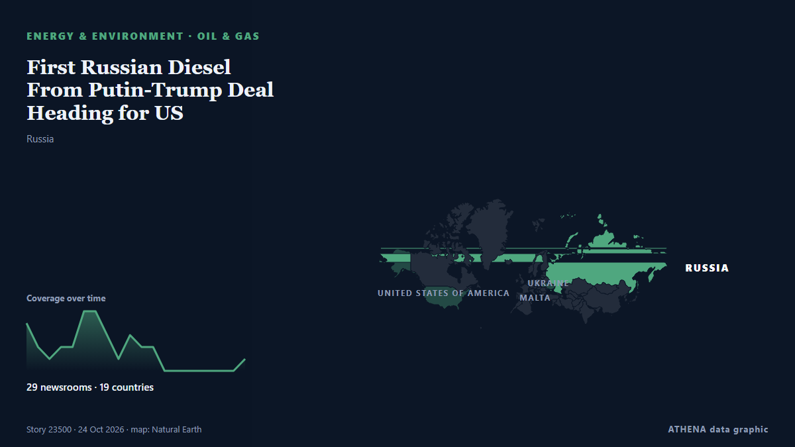

First Russian Diesel From Putin-Trump Deal Heading for US

The first Russian diesel bound for the US following a surprise agreement reached between Moscow and US President Donald Trump is aboard a tanker heading for New York, ship-tracking data showed on… from gCaptain
Reported independently by 29 outlets in 19 countries since 23 Oct, first by APA (English); coverage is fading. ATHENA rates the risk moderate (2.8/10), driven mainly by the severity of the harm described and its geographic and sector reach. Confidence is 86% (high), with 29 independent outlets corroborating it and an average source reliability of 77%. Who reported it: 5 newsrooms in United States, 4 newsrooms in Ukraine, 3 newsrooms in United Kingdom. The coverage ran from 23 Oct to 24 Oct, over 19 hours.
Why it matters: Energy and resource developments affect fuel and power prices, supply security and climate commitments.
What changed: 33 new reports from 27 newsrooms in the 24 hours to 24 Oct.
First reported as: First Russian diesel tanker heads to New York after Putin-Trump deal: Report
At a glance
Selected, scored and written by ATHENA's published methodology. No editor intervenes in individual events. How this is produced ›
| 23 Oct 07:25 UTC | 4 |
|---|---|
| 23 Oct 08:25 UTC | 2 |
| 23 Oct 09:25 UTC | 1 |
| 23 Oct 10:25 UTC | 2 |
| 23 Oct 11:25 UTC | 2 |
| 23 Oct 12:25 UTC | 5 |
| 23 Oct 13:25 UTC | 5 |
| 23 Oct 14:25 UTC | 3 |
| 23 Oct 15:25 UTC | 1 |
| 23 Oct 16:25 UTC | 3 |
| 23 Oct 17:25 UTC | 2 |
| 23 Oct 18:25 UTC | 2 |
| 23 Oct 19:25 UTC | 0 |
| 23 Oct 20:25 UTC | 0 |
| 23 Oct 21:25 UTC | 0 |
| 23 Oct 22:25 UTC | 0 |
| 23 Oct 23:25 UTC | 0 |
| 24 Oct 00:25 UTC | 0 |
| 24 Oct 01:25 UTC | 0 |
| 24 Oct 02:25 UTC | 1 |
| 23 Oct 07:28 UTC | 0.0 |
|---|---|
| 23 Oct 08:59 UTC | 1.5 |
| 23 Oct 11:22 UTC | 2.1 |
| 24 Oct 02:41 UTC | 2.8 |
Why these numbers
Importance
Risk
Confidence
The reporting — who reported it, and when
headline as published · opens the original- APA (English) · AzerbaijanRussian diesel heads to US after Putin-Trump deal, data shows
- The Independent · United KingdomRussian tanker heads for New York with 40,000 tons of diesel after Trump-Putin deal
- Daily Mirror · Sri LankaRussian diesel heads to US after Putin-Trump deal, data shows
- Türkiye Today · TurkeyFirst Russian diesel tanker heads to New York after Putin-Trump deal: Report
- Cyprus Mail · CyprusRussian diesel heads to US after Putin-Trump deal, data shows
- Kyiv Independent · UkraineFirst tanker with Russian diesel under Trump deal heads to US, Reuters reports
- Anadolu Agency (English) · TurkeyKremlin says ‘1st tanker’ carrying Russian diesel fuel as part of deal with US has departed
- Kyiv Post · UkraineRussian Diesel Tanker Heads to New York After Trump-Putin Deal
- Business Recorder · PakistanFirst Russian diesel from Putin-Trump deal heading for US, data shows
- The Independent · United KingdomThe Kremlin says a first tanker of Russian diesel sets sail for the US despite Ukraine's protests
- NDTV · IndiaRussian Diesel Tanker Leaves For US After Trump's Oil Deal With Moscow
- Kurdistan24 (English) · IraqRussian Diesel Tanker Heads for New York After US Eases Sanctions
- Arab News · Saudi ArabiaThe Kremlin says a first tanker of Russian diesel sets sail for the US despite Ukraine’s protests
- AzerNews · AzerbaijanUS set to receive first Russian diesel shipment since 2022
- Xinhua (English) — page reader · ChinaFirst Russian diesel tanker heads for U.S. under agreements: Kremlin
- NEWS.am (English) · ArmeniaKremlin spox reports on sending of first tanker with Russian diesel fuel to US
- Fortune · United StatesThe first Russian diesel tanker under Trump’s deal with Putin is headed to New York, the first such shipment since 2023
- OilPrice.com · United KingdomU.S. Diesel at $6.30 a Gallon as First Russian Cargo Sets Sail for New York
- Gulf News · United Arab EmiratesTanker with Russian diesel heads to New York under Trump deal
- PBS NewsHour · United StatesThe Kremlin says a first tanker of Russian diesel sets sail for the U.S. despite Ukraine's protests
- Bangkok Post — page reader · ThailandTanker with Russian diesel heads to New York
- The Straits Times · SingaporeFirst Russian diesel from Putin-Trump deal heading for US, data shows
- FreightWaves · United StatesRussian diesel tanker heads for U.S. following Trump-Putin deal
- Shafaq News (English) · IraqRussia begins diesel shipments under Trump agreement
- Kyiv Independent · UkraineInside the legal design of America's Russia sanctions U-turn
- gCaptain · United StatesFirst Russian Diesel From Putin-Trump Deal Heading for US
- The National · United Arab EmiratesInitial shipment of Russian diesel heads to the US after Trump-Putin deal
- gCaptain · United StatesRare Russian Diesel Shipment Expected in Norfolk November 2, Ahead of Tanker Bound for New York
- Cyprus Mail · CyprusFirst Russian diesel from Putin-Trump deal heading for US
- The Jerusalem Post · IsraelFirst Russian diesel from Putin-Trump deal heading for US, data shows
- Kyiv Independent · UkraineHow EU ships are still able to carry Trump's Russian diesel despite so many sanctions
- The Daily Star — page reader · BangladeshFirst Russian diesel from Putin-Trump deal heading for US
- NDTV · IndiaFirst Tanker Carrying Russian Diesel Sets Sail For US Under Trump-Putin Deal